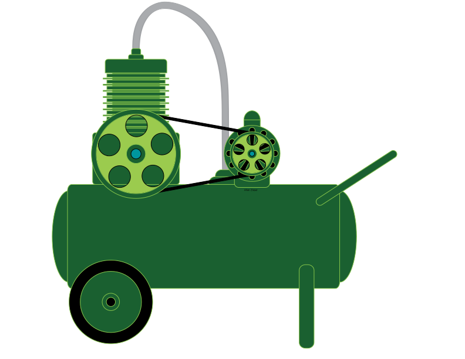

Atividade não revelada haha


Atividade não revelada haha


| Recompensa | Descrição | XP | |
|---|---|---|---|
| |
Apprentice | Obteve a resposta em frequência de um instrumento musical tocando uma nota específica | 30 |
| Timbre analyst | Comparou a resposta em frequência de dois ou mais instrumentos para a mesma nota (até 4 instrumentos - 15 XP por instrumento comparado) | 60 | |
| DFT Master | Resolveu os 10 exercícios de transformada discreta de Fourier | 50 | |
| |
Octave analyst | Comparou a resposta em frequência da mesma nota em oitavas diferentes | 30 |
| |
Pitch shifter | Criou um deslocador de frequência a analisou o resultado com DFT | 30 |
| Sound builder | Descreveu como os sons são formados em um instrumento musical | 30 | |
| Inspetor do coração | Aplicou DFT para obter batimento cardíaco de um sinal de PPG | 50 | |
| Aprendiz docente | Gravou vídeo aula explicando DFT para leigos | 50 | |
| |
Z Master | Atividade não revelada haha |
50 |
| |
Filter developer | Criou e aplicou seus filtros passa alta e passa baixa no dominio da frequência | 50 |
| |
Sound expert | Analisou o espectrograma de sua música favorita | 50 |
|  | O compressor | Criou seu próprio compressor de dados | 100 |
| |
Compressor analyst | Atividade não revelada haha |
50 |
| |
O(A) Idealizador(a) | Propôs uma atividade prática completa sobre um dos tópicos da disciplina | 30 |
| |
O(A) Ajudante | Ajudou membro de outra equipe (limitado a 1 ajuda) | 30 |
| |
O(A) Corretor(a) | Encontrou erro técnico no material da disciplina (ilimitado) | 30 |
| Detetive do youtube | Encontrou erro em vídeo aula do youtube (ilimitado, desde que o erro não seja proposital) | 30 | |
| Aluno(a) exemplar | Foi pontual (máximo de 15 minutos de atraso) em todas as aulas do módulo | 30 |